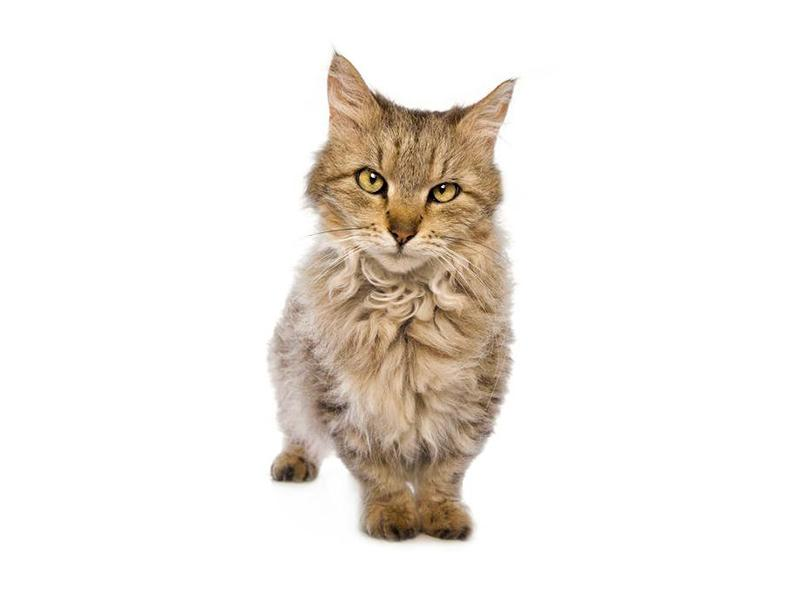

La raza de gato skookum proviene de los Estados Unidos y fue creada por Roy Galusha en 1990. A Galusha le fascinaban tanto los gatos munchkin como los LaPerm, por lo que decidió cruzarlos. A partir de este momento, otros criadores hicieron lo mismo en Nueva Zelanda, Australia y Europa.

Es de pequeño tamaño y presenta huesos más cortos que otras razas de gato. Además, pesan menos. En concreto, los machos pesan entre 2 y 3 kg y las hembras entre 1,5 y 2 kg, lo que equivale prácticamente al 50 % del peso de un gato adulto estándar. Dentro de sus características físicas, podemos destacar las siguientes:
Cuerpo musculoso, bajo y robusto.
Patas cortas, las traseras más largas que las delanteras.
Cabeza en forma de cuña redondeada y pequeña.
Pies redondeados y compactos.
Cuello y pecho redondeado.
Ojos grandes, en forma de nuez con gran expresividad.
Cejas y bigotes rizados y prominentes.
Orejas grandes y puntiagudas.
Cola larga, peluda y redondeada al final.
Pelo suave, rizado, corto o medio. El de los machos suele ser más rizado que el de las hembras.

La raza de gatos skookum pueden presentar diversos colores y patrones, tales como:
Sólido.
Tabby o atigrado.
Colorpoint.
Bicolor.
Negro.
Blanco.
Marrón.
Quizá por su tamaño, esta raza de gato puede hacernos pensar que es muy delicada, poco energética y asustadiza, pero en realidad es todo lo contrario. El gato skookum combina las características de las dos razas que le dieron vida, por lo que se trata de unos gatos activos, inteligentes, cariñosos, atléticos, dulces y confiados. Los gatos de la raza skookum son sociables y se suelen llevar bien con otras mascotas. Además, son ideales para familias con niños. También son gatos que muestran y demandan mucho afecto, por lo que no se aconseja dejarlos mucho tiempo solos. Por otro lado, a los gatos skookum les gusta mucho jugar y son capaces de aprender a pasear con correa. Además, los gatos de la raza skookum son muy confiados y seguros de sí mismos y, pese a sus cortas patas, no dudan en saltar y escalar. Les gusta esconderse e incluso extraviar cosas. Al ser fuertes y energéticos les encanta divertirse con cualquier actividad y no dudarán en acompañar a sus tutores en la realización de sus tareas o aficiones por la casa.

Los cuidados de estos gatos no difieren, por lo general, a los que debería tener cualquier gato: una alimentación variada y equilibrada, con todos los aminoácidos esenciales, alta proteína y de buena calidad, ajustando las calorías a su estado fisiológico y físico. Hay que recordar que los cambios de alimento deben hacerse de forma gradual para no provocar alteraciones digestivas y no darles de más, debido a que tienen tendencia a la obesidad. El agua, como a todos los gatos, les suele gustar más en movimiento, siendo las fuentes para gatos una buena opción. Con respecto al cepillado, es una raza de pelo rizado, por lo que el cepillado frecuente varias veces por semana es importante, así como para crear un buen vínculo cuidador-gato que adorará. También hay que vigilar el estado de su pelo, la presencia de parásitos o infecciones y comprobar periódicamente sus oídos, buscando infecciones o parasitaciones.

Las cortitas patas del gato skookum puede traerle problemas de columna u óseos ya que, en realidad, el tamaño de las patas se debe a un tipo de enanismo denominado acondroplasia. Esta displasia ósea es genética y consiste en un cambio en el material genético (ADN) que crea alteraciones en el receptor del factor de crecimiento 3 de los fibroblastos y, por tanto, genera anomalías en la formación del cartílago, con la consecuente alteración en el crecimiento de los huesos. Debido a esto, el gatito se debe mantener activo y debemos asegurarnos que haga ejercicio para mantener fuerte su musculatura, así como llevar a cabo controles veterinarios para verificar que todo va bien en su cuerpo. Aunque parece que a día de hoy no es muy frecuente que aparezcan inconvenientes, criar una raza con esta mutación que puede condicionar la calidad y esperanza de vida de un gato es cuestionable. Es muy importante que, especialmente estos gatos, no engorden hasta llegar al sobrepeso o la obesidad, debido a que se agravarían los problemas. Aparte de lo anterior, aún es una raza nueva y experimental y no ha dado tiempo a que se le relacione con ciertas enfermedades, aunque se piensa que el hipotiroidismo y los problemas renales pueden estar ligadas a la acondroplasia. El conocido "Grumpy Cat" que murió en 2019 con 6 años presentaba acondroplasia y prognatismo (dientes inferiores delante de los superiores debido a una deformación genética de la mandíbula), y acabó falleciendo a causa de complicaciones a partir de una infección renal. Pese a que no se ha establecido una esperanza de vida, se piensa que si la acondroplasia no causa dolor ni consecuencias, la esperanza de vida sería la estándar de cualquier gato cuidado y atendido correctamente.